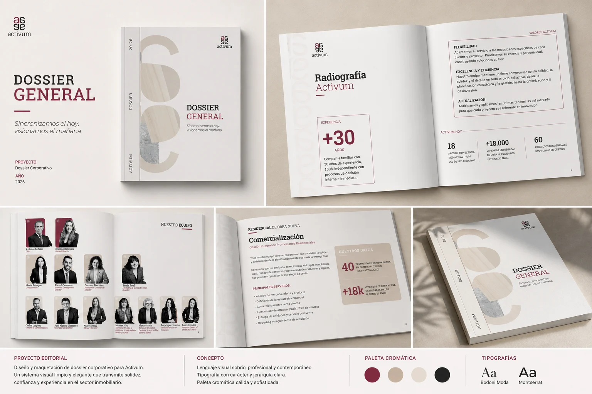
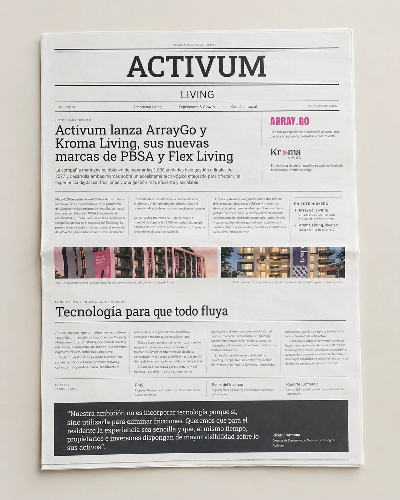
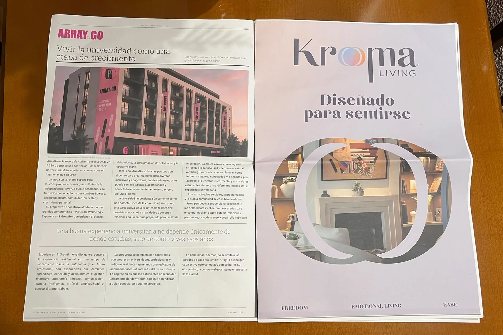

Marca en papel
Brand on paper
Dossieres, periódico de lanzamiento, revista interna, cartelería y artes finales para una consultora inmobiliaria y sus marcas.
Dossiers, a launch newspaper, an internal magazine, signage and print-ready artwork for a real estate consultancy and its brands.

- Sector
- Inmobiliario · servicios corporativosReal estate · corporate services
- AñoYear
- 2025–26
- Mi rolMy role
- Diseño, maquetación y artes finales para imprenta.Design, layout and print-ready artwork.
- EntregablesDeliverables
- Dossier general, dossieres de servicios, periódico de lanzamiento, revista interna, folletos, cartelería exterior, mailings, presentaciones y la caja regalo del 30 aniversarioGeneral dossier, service dossiers, launch newspaper, internal magazine, brochures, outdoor signage, mailings, presentations and the 30th anniversary gift box
- HerramientasTools
- InDesign · Illustrator · Canva · Claude
01El retoThe challenge
Una consultora inmobiliaria necesitaba todo su material comercial bajo una misma voz: dossieres de servicios para captar clientes, cartelería para promociones y eventos, y una revista interna para el equipo.A real estate consultancy needed all its sales material under one voice: service dossiers to win clients, signage for developments and events, and an internal magazine for the team.
02ProcesoProcess
- Una retícula para todoOne grid for everything
Dossieres, folletos y revista comparten retícula y jerarquía, para que se lean como una sola marca.Dossiers, brochures and magazine share one grid and hierarchy, so they read as a single brand.
- Papel y pantallaPaper and screen
Cada pieza se diseña para imprimirse y para enviarse en PDF sin rehacerla.Every piece is designed to be printed and sent as a PDF without redoing it.
- Artes finales en casaArtwork prepared in-house
Preparación para imprenta: sangrados, perfiles de color y revisión de pruebas.Prepress: bleeds, colour profiles and proof checks.
03Periódico de lanzamientoLaunch newspaper
Edición especial impresa para presentar ArrayGo y Kroma Living, con el avance de Hëlia: tres marcas que diseñé, reunidas en una sola pieza editorial.A special printed edition to launch ArrayGo and Kroma Living, with a preview of Hëlia — three brands I designed, brought together in a single editorial piece.
- FormatoFormat
- Periódico impreso · 8 páginasPrinted newspaper · 8 pages
- FechaDate
- Septiembre 2026September 2026
- Mi rolMy role
- Diseño editorial y maquetaciónEditorial design and layout


La edición impresa.The printed edition.
Las tres marcas, en detalle: ArrayGo · Kroma Living · HëliaThe three brands in detail: ArrayGo · Kroma Living · Hëlia